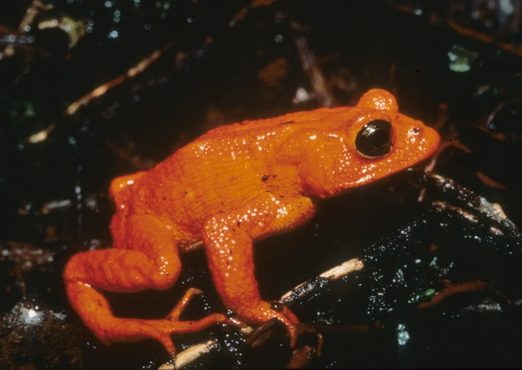

{kind=link}
library(tidyverse)
library(rstatix)
# These packages will be used for evaluating the models we fit to our simulated data
library(performance)
library(ggResidpanel)
# This package is optional/will only be used for later sections in this chapter
library(MASS)7 Simulating continuous predictors
In this and the next couple of chapters, we’re going to simulate a dataset about golden toads, an extinct species of amphibians.
We’ll simulate various predictor variables, and their relationship to the clutch size (number of eggs) produced by a given toad.
In this chapter, we’ll start by looking at continuous predictor variables.

7.1 Libraries and functions
Click to expand
import numpy as np
import pandas as pd
import matplotlib.pyplot as plt
import statsmodels.api as sm
import statsmodels.formula.api as smf
from patsy import dmatrix7.2 Step 1: Set seed and sample size
First, we set a seed and a sample size:
set.seed(20)
# sample size
n <- 60np.random.seed(25)
# sample size
n = 607.3 Step 2: Generate values of predictor variable
The next step is to generate our predictor variable.
There’s no noise or uncertainty in our predictor (remember that residuals are always in the y direction, not the x direction), so we can just produce the values by sampling from a distribution of our choice.
One of the things that can cause variation in clutch size is the size of the toad herself, so we’ll use that as our continuous predictor. This sort of biological variable would probably be normally distributed, so we’ll use rnorm to generate it.
Google tells us that the average female golden toad was somewhere in the region of 42-56mm long, so we’ll use that as a sensible basis for our normal distribution for our predictor variable length.
length <- rnorm(n, 48, 3)length = np.random.normal(48, 3, n)7.4 Step 3: Simulate average values of response variable
Now, we need to simulate our response variable, clutchsize.
We’re going to do this by setting up the linear model. We’ll specify a y-intercept for clutchsize, plus a gradient that captures how much clutchsize changes as length changes.
b0 <- 175
b1 <- 2
sdi <- 20b0 = 175
b1 = 2
sdi = 20We’ve also added an sdi parameter. This captures the standard deviation around the model predictions that is due to other factors we’re not measuring. In other words, this will determine the size of our residuals.
Now, we can simulate our set of predicted values for clutchsize.
avg_clutch <- b0 + b1*lengthavg_clutch = b0 + b1*lengthYou’ll notice we’ve just written out the equation of our model.
tibble(length, avg_clutch) %>%
ggplot(aes(x = length, y = avg_clutch)) +
geom_point()
We use the tibble function to combine our response and predictor variables together into a single dataset.
tempdata = pd.DataFrame({'length': length, 'avg_clutch': avg_clutch})
tempdata.plot.scatter(x = 'length', y = 'avg_clutch')
plt.show()
We use the pd.DataFrame function to stitch our arrays together into a single dataframe object with multiple columns.
When we visualise length and avg_clutch together, you see they perfectly form a straight line. That’s because avg_clutch doesn’t contain the residuals - that comes next.
7.5 Step 4: Simulate actual values of response variable
The final step is to simulate the actual values of clutch size.
Here, we’ll be drawing from a normal distribution. We put avg_clutch in as our mean - this is because the set of actual clutch size values should be normally distributed around our set of predictions.
Or, in other words, we want the residuals/errors to be normally distributed.
clutchsize <- rnorm(n, avg_clutch, sdi)
goldentoad <- tibble(clutchsize, length)clutchsize = np.random.normal(avg_clutch, sdi, n)
goldentoad = pd.DataFrame({'length': length, 'clutchsize': clutchsize})7.6 Step 5: Checking the dataset
Let’s make sure our dataset is behaving the way we intended.
First, we’ll visualise it:
ggplot(goldentoad, aes(x = length, y = clutchsize)) +
geom_point()
goldentoad.plot.scatter(x = 'length', y = 'clutchsize')
plt.show()
And then, we’ll construct a linear model - and check that our beta coefficients have been replicated to a sensible level of precision!
lm_golden <- lm(clutchsize ~ length, goldentoad)
summary(lm_golden)
Call:
lm(formula = clutchsize ~ length, data = goldentoad)
Residuals:
Min 1Q Median 3Q Max
-33.718 -10.973 1.094 11.941 41.690
Coefficients:
Estimate Std. Error t value Pr(>|t|)
(Intercept) 267.1395 38.4922 6.940 3.7e-09 ***
length 0.1065 0.8038 0.132 0.895
---
Signif. codes: 0 '***' 0.001 '**' 0.01 '*' 0.05 '.' 0.1 ' ' 1
Residual standard error: 18.76 on 58 degrees of freedom
Multiple R-squared: 0.0003025, Adjusted R-squared: -0.01693
F-statistic: 0.01755 on 1 and 58 DF, p-value: 0.8951model = smf.ols(formula= "clutchsize ~ length", data = goldentoad)
lm_golden = model.fit()
print(lm_golden.summary()) OLS Regression Results
==============================================================================
Dep. Variable: clutchsize R-squared: 0.184
Model: OLS Adj. R-squared: 0.170
Method: Least Squares F-statistic: 13.07
Date: Mon, 09 Jun 2025 Prob (F-statistic): 0.000630
Time: 11:43:20 Log-Likelihood: -256.33
No. Observations: 60 AIC: 516.7
Df Residuals: 58 BIC: 520.8
Df Model: 1
Covariance Type: nonrobust
==============================================================================
coef std err t P>|t| [0.025 0.975]
------------------------------------------------------------------------------
Intercept 157.5257 30.614 5.146 0.000 96.245 218.806
length 2.2928 0.634 3.615 0.001 1.023 3.562
==============================================================================
Omnibus: 0.516 Durbin-Watson: 2.307
Prob(Omnibus): 0.773 Jarque-Bera (JB): 0.492
Skew: -0.207 Prob(JB): 0.782
Kurtosis: 2.839 Cond. No. 649.
==============================================================================
Notes:
[1] Standard Errors assume that the covariance matrix of the errors is correctly specified.Not bad at all. The linear model has managed to extract beta coefficients similar to the original b0 and b1 that we set.
If you’re looking to explore and understand this further, try exploring the following things in your simulation, and see how they affect the p-value and the precision of the beta estimates:
- Varying the sample size
- Varying the
sdi - Varying the
b1parameter
7.7 Exercises
7.7.1 A second continuous predictor
7.7.2 A brand new dataset
7.8 Summary
In this chapter, we’ve simulated two-dimensional data for the first time.
First, we construct a continuous variable to act as a predictor. Then, we can simulate our response variable as a function of the predictor variable(s) via a linear model equation, with residuals added.
By definition, the assumptions of the linear model will be always be met, because we are in control of the nature of the underlying population.
However, our model may or may not do a good job of “recovering” the original beta coefficients we specified, depending on the sample size and the amount of error we introduce in our simulation.
Key Points
- Predictor variables can be simulated from different distributions, with no errors associated
- Response variables should be simulated with errors/residuals from the normal distribution
- To do this, we need to specify the equation of the straight line, i.e., the intercept and slope beta coefficients, as parameters in the simulation